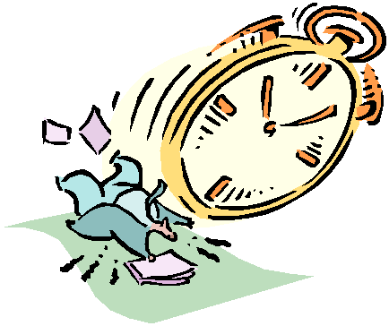

| Home => TimeKeeper |
|
 Programming Notes: TimeKeeper is coded in JavaScript. I attempted to avoid all new features in the language so that TimeKeeper could be used with more web browsers. Specifically, features in JavaScript 1.3 were avoided. All the scripts are in the one TimeKeeper page and can be easily viewed with any HTML or text editor. The functions that respond to the main, driver buttons, only do processing. That is, they do sanity checks, calculations and set the cookies. They do no generation of visible output. The dynamic creation of HTML is all done by scripts in the body of the web page. These scripts only read the cookies, never change them. The functions that work on the current project (Start, End, Suspend, Resume, Reset) all deal with global variables. These function never directly interact with the cookies. Likewise, when the web page is being dynamically built by scripts in the BODY section, these scripts too read the globally shared variables. They never update these variables and never deal with the cookies directly. The global variables have names that start with "global_". The are initialized to "*not found*" and are then populated based on the input cookies. Variables that have no value in the input cookies remain with the "*not found*" value. The global variables are set in the ReadCookieSetupVariables() function. There is a debug mode for TimeKeeper in which it dumps out the cookies. To enable debug mode, edit the web page. Near the top is a variable called "DebugMode" that is normally initialized to "off". Set it to "on". It also displays the time the page was loaded. This should only be of interest to me. Timers: Netscape Navigator v4 With v4.77 the page title does not change in response to the below. It
works in IE5. With v4.77 TimeKeeper loads very slowly, much more slowly than with IE5. Due to differences in the way Navigator and IE5 handle Navigator 4.77 also caused lots of grief with the reminders feature and with disabling buttons (see below). Reminders The alert window created when a reminder time is reached, is created using the JavaScript alert command. In testing, I found this window caused a beep on a Windows 2000 computer and not on a Windows NT4 computer. I emailed Danny Goodman, the author of the JavaScript Bible to ask if the alert command causes a beep or not. He was nice enough to respond and said that the beep is Operating System dependent. He said there will be no beep on an Apple Macintosh. The JavaScript language does not, unfortunately, have any sort of beep command. Originally reminders were going to be hosted in the main TimeKeeper page but it turns out they get destroyed when a page is reloaded. So it goes. Instead, each reminder is spawned as its own web browser window. These reminder windows are independent of the TimeKeeper window. The timer is started by the new window, not by the main TimeKeeper window. After the timer alert is issued, the new window closes itself. Reminders are implemented very differently from the main TimeKeeper window. TimeKeeper sets no timers and stores all data in cookies. The reminder windows set/read no cookies and they are driven by a timer that it set when the page is first loaded/created. Reminders work fine with IE5 but do not work well with Navigator 4.77 (I haven't tested other browsers). IE5 will spawn multiple reminder windows as long as the window name property of the window.open command is null (it is). Navigator 4.77 never spawns multiple reminder windows both when the window name was null and when it was set to a value. Each time you set a new reminder in Navigator it destroys the old reminder. Navigator also has a bug with the onUnload event defined in the BODY tag. With a simple web page it works fine, but for some reason when TimeKeeper generates a reminder web page with document.write that has the onUnload event, it does not work. You can see my Netscape Communicator gripes for the gory details. In brief, the onUnload event runs when the page is loaded. To work around this problem, I don't generate the onUnload event when running under a browser other than IE. This means that users with other browsers don't get warned when a reminder is terminated prematurely. Reminder windows generated in a browser other than IE include a suggestion to use IE. Disabling Buttons: The disabling of buttons proved to be a sinkhole of browser incompatibility. In IE buttons are disabled that are not appropriate (such as suspending just after suspending). This does not work however in Netscape Navigator v4. The HTML and JavaScript code to implement this looks like: <input type=button value="Start Work Day"
onClick="StartTicker()" id="startbutton"> This code says that if you just hit the Suspend button, the start button and the suspend button should be disabled. The TimeKeeper logic is that you can't suspend working while you are already suspended and you can't start a new work day while the current day is suspended (instead, you have to end the current day first). This code works fine in IE5 but Netscape seemed not to not execute it at all. Debugging showed that when none of the if tests were true, Navigator executed the entire script. However, when an if test was true, the browser died right there and failed to execute the rest of the script. I tried changing the identifying string of the buttons from "id" to "name". This improved things in that Navigator did not die mid-script. However, it did not disable the buttons. Further research turned up the fact that disabling of buttons is not supported in Navigator v4. It works in IE4, IE5 and Navigator v6. While on the subject, Navigator v4 also does not allow control over the button label. IE4, IE5 and Navigator v6 do. Users of those browsers will see bold labels and a red label on the Help button. Cookie Fields:
CurrDayTotal is current days total minutes worked One annoying thing about dealing with cookies in client-side JavaScript is that you read all the cookies in one big clump, but you write them out one at a time. TimeKeeper used to have a cookie for each project related variable. Now it has one cookie that represents all 8 variables needed to maintain the state of a given project. When client-side JavaScript reads cookies, it read them all. Even those not related to TimeKeeper at all. I have to parse through this long string that I refer to as BigCookie. A colon is used by JavaScript to separate cookies when they are read. However, its up to my program to parse through BigCookie and split out individual cookies. The last cookie does not end with a semicolon. Within a project related cookie, I use the up-and-down-line character
("|") as a field separator. The format is Other: If the web browser does not support JavaScript, the user is told that JavaScript is required. This is done with NOSCRIPT tags. Note that browsers that can support JavaScript may have it disabled. This same technique is used both in TimeKeeper itself and on the TimeKeeper home page. TimeKeeper does not write to any files or databases. All its data is kept in web browser cookies. The TimeKeeper logo is clip art included with Front Page 2000. The background color is changed using the following A cookie, by default, only applies to the directory it is in. This single TimeKeeper.html file can be used Questions: How can you abort a JavaScript script when a fatal error is detected? Try/Catch blocks are too new to be widely implemented. The language tolerates all sorts of numeric errors, such as dividing by zero. One thing you can do is assign a variable to an undefined variable, but that does not stop the script cold. How do stop execution of a script when there is not error? I have a script that is not part of a function and only want to execute it sometimes. If it was a function, no problem, you just return. But in the body of a script? For the time being, I put the whole script inside an if test, but this is not very elegant. The break statement can break out of any labeled statement, but as far as I know, labeling a statement requires JavaScript 1.3 and I prefer to rely on older syntax. Is there a no-op in JavaScript? Sometimes its preferable to code |
| Top of Page | Home => TimeKeeper |
| Last updated: November 7, 2001 | TimeKeeper: Download | Usage Notes | Change History | Run On-Line | Tech Notes | Enhancements |